1036L10 CAMSHAFTS IN CYLINDER HEAD EXTENSION - R R - INCLUDES CYLINDER HEAD EXTENSION REPLACEMENT IF NECESSARY
- Path
- Procedures > 10 ENGINE UNIT > 1036 TIMING SYSTEM > 1036L CAMSHAFT (2) IN TOP HEAD (1) > 1036L10 CAMSHAFTS IN CYLINDER HEAD EXTENSION - R R - INCLUDES CYLINDER HEAD EXTENSION REPLACEMENT IF NECESSARY
- Kind
- repair procedure (removal / refitting; the operation number is the code)
- Applies to
- engines: 1.9 JTD 16V; all production periods
- Interactive page
- https://sloeber94.github.io/elrnDB-aGt/en/#/125000996
Applies to: engines: 1.9 JTD 16V; all production periods
 Removing
Removing
 Refitting
RefittingPosition the vehicle on a lift.
Make sure that the ignition key is in the OFF position, then disconnect the negative battery terminal (-)
Description | Connector | |
|---|---|---|
- | Battery | See A1B BATTERY ( BATTERY NEGATIVE ) |
Proceed with the removal
Op. 1008C10 POWER UNIT UPPER REACTION LINK R R.
Proceed with the removal
Op. 1060G80 DS ELECTRIC INJECTION CONTROL UNIT - R R.
Proceed with the removal
Op. 4450B04 RIGHT FRONT WHEEL R R.
Proceed with the removal
Op. 7055B54 UNDER-ENGINE GUARD - R R.
Proceed with the removal
Op. 7055B91 RIGHT FRONT WHEEL ARCH LINER - R.R..
Proceed with the removal
Op. 1092G10 SINGLE ENGINE BELT R R.
Proceed with the removal
Op. 1092A10 CRANKSHAFT SERVICES PULLEY - R.R..
Proceed with the removal
Op. 1092G20 ENGINE COMPONENT SINGLE BELT FIXED TENSIONER - ONE - R + R.
Proceed with the removal
Op. 1032D12 TIMING SYSTEM PROTECTIVE COVER(S) - R + R.
1. Unscrew bolts (1a) and (1b), then remove the bracket on the engine for the reaction link (1c).
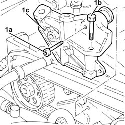
Applies to: engines: 1.9 JTD 16V; all production periods
1. Loosen the nut retaining the timing belt moving tensioner.
2. Release and remove the toothed timing drive belt.
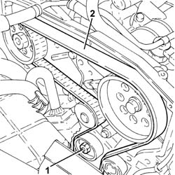
Applies to: engines: 1.9 JTD 16V; all production periods
1. Disconnect the electrical connections from the injectors.
Description | Connector | |
|---|---|---|
1 | Injector | See N70 INJECTOR |
2. Disconnect the electrical connection from the cam angle sensor.
Description | Connector | |
|---|---|---|
2 | Timing sensor | See K47 TIMING SENSOR. ( CONNECTORS ) |
3. Disconnect the electrical connection of the air conditioner compressor.
Description | Connector | |
|---|---|---|
3 | Air conditioning compressor engagement electro-magnet | See L20 AIR CONDITIONING COMPRESSOR ENGAGEMENT ELECTRO-MAGNET ( CONNECTORS ) |
Release the electrical wiring from the band on the timing cover.
4. Unscrew the bulkhead coupling bolts and move the electrical wiring aside.
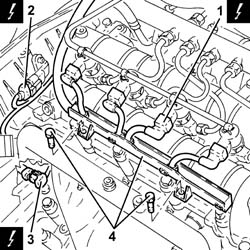
Applies to: engines: 1.9 JTD 16V; all production periods
1. Press clips (1a) by hand and disconnect the pipe from the injectors to the fuel recovery manifold (1b), injector side, and move aside.
2. Unscrew fittings (2a) and (2b) and remove the pipes from the fuel manifold to injectors (2c).
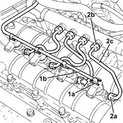
Applies to: engines: 1.9 JTD 16V; all production periods
1. Undo the injector bracket retaining nuts.
2. Remove the injectors (2a) complete with brackets using tool (2b).
Description | Code | |
|---|---|---|
2b | Extractor | 1.870.897.300 |
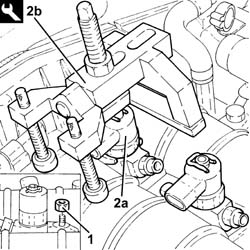
Applies to: engines: 1.9 JTD 16V; all production periods
1. Undo the connectors (1a), (1b) and remove the pipe from the pressure pump to the fuel manifold (1c).
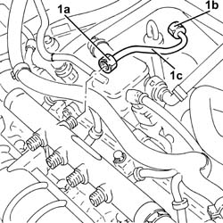
Applies to: engines: 1.9 JTD 16V; all production periods
1. Disconnect the electrical connection from the fuel pressure sensor.
Description | Connector | |
|---|---|---|
1 | Fuel pressure sensor | See K83 FUEL PRESSURE SENSOR |
2. Undo the bolts (2a) and remove the single fuel manifold pipe (2b) complete with fuel pressure sensor (2c).
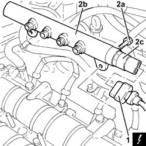
Applies to: engines: 1.9 JTD 16V; all production periods
Proceed with the removal
1. Loosen the collar and disconnect the vacuum pipe from the brake servo.
2. Loosen the band and disconnect the engine oil vapour recovery pipe from the engine oil filler.
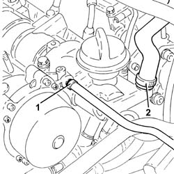
Applies to: engines: 1.9 JTD 16V; all production periods
1. Disconnect the electrical connection from the engine coolant temperature sensor.
Description | Connector | |
|---|---|---|
1 | Engine temperature sending unit | See K36 ENGINE TEMPERATURE SENDER UNIT ( CONNECTORS ) |
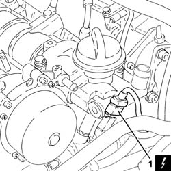
Applies to: engines: 1.9 JTD 16V; all production periods
1. Undo the bolts (1a) and remove the engine oil filler (1b).
2. Remove the gasket.
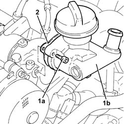
Applies to: engines: 1.9 JTD 16V; all production periods
1. Undo the bolts (1a) and remove the vacuum unit (1b).
2. Remove the gasket.
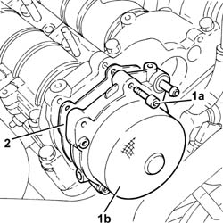
Applies to: engines: 1.9 JTD 16V; all production periods
1. Undo bolts (1a) and (1b) and remove the cylinder head extension assembly (1c).
2. Remove the gasket.
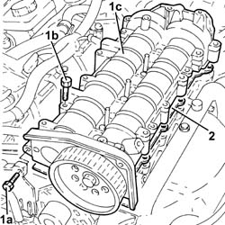
Applies to: engines: 1.9 JTD 16V; all production periods
1. Position the cylinder head extension (1a) in a vice using the tool (1b).
Description | Code | |
|---|---|---|
1b | Support | 1.860.470.001 |
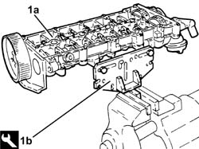
Applies to: engines: 1.9 JTD 16V; all production periods
1. Undo the bolt (1a) and remove the cam angle sensor (1b).
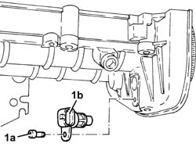
Applies to: engines: 1.9 JTD 16V; all production periods
1. Remove plug (1a) and fit camshaft timing tools (1b) to the cylinder head extension.
Description | Code | |
|---|---|---|
1b | Templates | 1.870.896.900 |
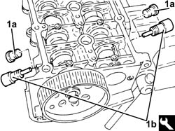
Applies to: engines: 1.9 JTD 16V; all production periods
1. Undo the bolts fixing the camshaft gears.
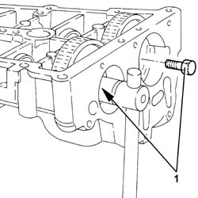
Applies to: engines: 1.9 JTD 16V; all production periods
1. Undo the bolt (1a) and remove the exhaust side camshaft toothed drive pulley (1b).
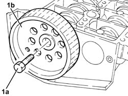
Applies to: engines: 1.9 JTD 16V; all production periods
Remove the camshaft timing tools from the cylinder head extension.
Description | Code | |
|---|---|---|
- | Templates | 1.870.896.900 |
1. Wtihdraw the camshafts (1a), as far as necessary and remove the camshaft gears (1b).
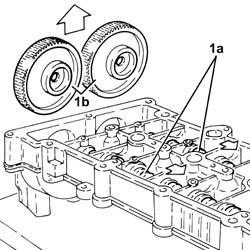
Applies to: engines: 1.9 JTD 16V; all production periods
1. Using a suitable drift, extract the inlet side camshaft (1a) and plug (1b).
2. Using a suitable drift, extract the exhaust side camshaft (2a) and oil seal (2b).
Remove the exhaust side camshaft oil seal.
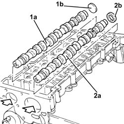
Applies to: engines: 1.9 JTD 16V; all production periods
Refitting
RemovingPlace the camshafts in their housings.
Place the camshaft gears in their housings and secure them without tightening the bolts.
1. Fit the camshaft timing tools.
Description | Code | |
|---|---|---|
1 | Templates | 1.870.896.900 |
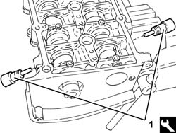
Applies to: engines: 1.9 JTD 16V; all production periods
1. Tighten the camshaft gear fixing bolts to the recommended torque.
Fastening | Component | Ø | Value (daNm) | |
|---|---|---|---|---|
1 | Bolt | IDLER GEAR ON CAMSHAFTS | M12 | (camshaft side) 10.8 - 13.2 |
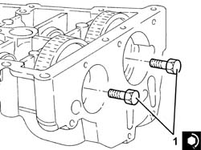
Applies to: engines: 1.9 JTD 16V; all production periods
1. Fit the exhaust side camshaft front oil seal (1a) using the tool (1b).
Description | Code | |
|---|---|---|
1b | Fitting tool | 1.870.896.800 |
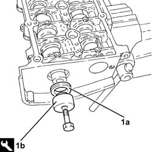
Applies to: engines: 1.9 JTD 16V; all production periods
Fit the intake side camshaft plug.
Refit the exhaust side camshaft toothed pulley and secure by screwing in the bolt without tightening.
1. Position the cam angle sensor (1a) in its housing and secure it tightening the bolt (1b) to the recommended torque.
Fastening | Component | Ø | Value (daNm) | |
|---|---|---|---|---|
1b | Bolt | CAM ANGLE SENSOR | M6 | (Cylinder head side) 0.8 - 1.0 |
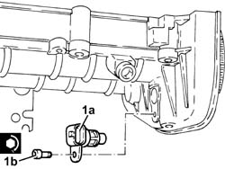
Applies to: engines: 1.9 JTD 16V; all production periods
1. Refit the cylinder head extension gasket.
Remove the support tool complete with cylinder head extension from the vice and separate them.
Remove the timing tool, intake camshaft side, and tighten the nut.
2. Position the cylinder head extension (2a) in its housing and secure it tightening the bolts (2b) to the recommended torque.
1. Position the cylinder head extension locating bushes on the cylinder head as shown in the figure.
Fastening | Component | Ø | Value (daNm) | |
|---|---|---|---|---|
2b | Bolt | CYLINDER HEAD EXTENSION | M8 | (Cylinder head side) 2.3 - 2.8 |
Fastening | Component | Ø | Value (daNm) | |
|---|---|---|---|---|
2b | Bolt | INJECTION PRESSURE PUMP MOUNT | M8 | (Cylinder head side) 2.3 - 2.8 |
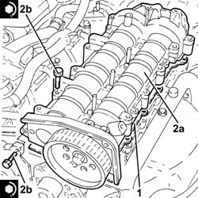
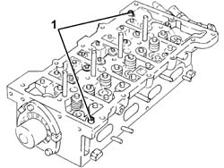
Applies to: engines: 1.9 JTD 16V; all production periods
1. Undo the bolt fixing the crankcase front cover shown in the diagram.
Temporarily fit the toothed timing drive belt on the drive pulley.
2. Fit the tool (2a) and fasten it using the calibrated screw (2b)
Description | Code | |
|---|---|---|
2a | Template | 1.860.905.000 |
Description | Code | |
|---|---|---|
2b | Calibrated screw | 1.860.905.010 |
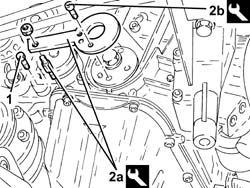
Applies to: engines: 1.9 JTD 16V; all production periods
1. Fully fit the toothed timing drive belt.
2. Use a screwdriver for leverage in the opening (2a) until the reference for the tensioner (2b) is aligned with the opening reference (2c) and, in this position, tighten the nut (2d) for the belt tensioner to the recommended torque.
Fastening | Component | Ø | Value (daNm) | |
|---|---|---|---|---|
2d | Nut | MOBILE TIMING TENSIONER | M8 | 2.3 ÷ 2.8 |
3. Tighten the bolt fixing the exhaust side camshaft toothed pulley to the recommended torque.
Fastening | Component | Ø | Value (daNm) | |
|---|---|---|---|---|
3 | Bolt | TIMING DRIVEN PULLIES | M12 | (Exhaust camshaft side) 10.8 - 13.2 |
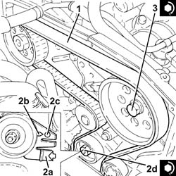
Applies to: engines: 1.9 JTD 16V; all production periods
Remove the timing tools.
Description | Code | |
|---|---|---|
- | Templates | 1.870.986.900 |
Description | Code | |
|---|---|---|
- | Template | 1.860.905.000 |
Description | Code | |
|---|---|---|
- | Calibrated screw | 1.860.905.010 |
Rotate the crankshaft through two revolutions.
Recheck the timing by refitting the timing tools.
Check the mobile timing belt tensioner references are aligned.
Tighten the bolt fixing the crankcase front cover removed previously.
Tighten the plug on the cylinder head extension for fitting the exhaust side timing tool.
1. Place the vacuum pump (1a), complete with gasket (1b), back in its housing and secure it tightening the bolts (1c) to the recommended torque.
Fastening | Component | Ø | Value (daNm) | |
|---|---|---|---|---|
1c | Bolt | VACUUM PUMP FOR BRAKE SYSTEM | M6 | (Cylinder head side) 0.5 - 0.6 + 50? |
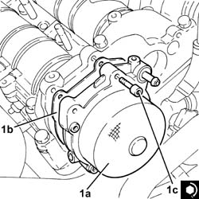
Applies to: engines: 1.9 JTD 16V; all production periods
1. Place the engine oil filler fitting (1a), complete with gasket (1b), back in its housing and secure it tightening the bolts (1c) to the recommended torque.
Fastening | Component | Ø | Value (daNm) | |
|---|---|---|---|---|
1c | Bolt | ENGINE OIL FILLER FITTING | M6 | (Cylinder head side) 0.8 - 1.0 |
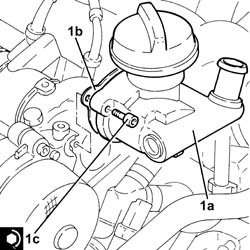
Applies to: engines: 1.9 JTD 16V; all production periods
Connect the electrical connection to the engine coolant temperature sensor.
Connectt the engine oil vapour recovery pipe to the engine oil filler fitting and tighten the band.
Connect the vacuum pipe to the brake servo and tighten the band.
Proceed with the refitting
1. Place the single fuel manifold rail (1a), complete with fuel pressure sensor (1b), back in its housing and secure it tightening the bolts (1c) to the recommended torque.
Fastening | Component | Ø | Value (daNm) | |
|---|---|---|---|---|
1c | Bolt | INJECTOR FUEL MANIFOLD (DIESEL) | M8 | (Cylinder head extension side) 2.3 - 2.8 |
2. Connect the electrical connection to the fuel pressure sensor.
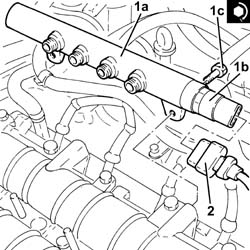
Applies to: engines: 1.9 JTD 16V; all production periods
1. Place a new pipe from the pressure pump to the single fuel manifold in its housing and secure it using the connectors without tightening them.
2. Tighten the connector for the pipe from the pressure pump to the single fuel manifold, pump side, to the recommended torque using a suitable commercial wrench.
Fastening | Component | Ø | Value (daNm) | |
|---|---|---|---|---|
2 | Connector | PRESSURE PUMP LINE TO FUEL MANIFOLD | M14 | (Pressure pump side) 2.2 - 2.4 |
3. Tighten the connector for the pipe from the pressure pump to the single fuel manifold, fuel manifold side, to the recommended torque using a suitable commercial wrench.
Fastening | Component | Ø | Value (daNm) | |
|---|---|---|---|---|
3 | Connector | PRESSURE PUMP LINE TO FUEL MANIFOLD | M14 | (Fuel manifold side) 2.2 - 2.4 |
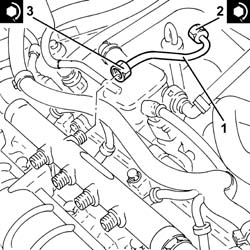
Applies to: engines: 1.9 JTD 16V; all production periods
1. Refit the injectors (1a) complete with brackets and tighten nuts (1b) to the specified torque.
Fastening | Component | Ø | Value (daNm) | |
|---|---|---|---|---|
1b | Nut | INJECTORS(DIESEL) | M8 | (Cylinder head extension side) 2.3 - 2.8 |
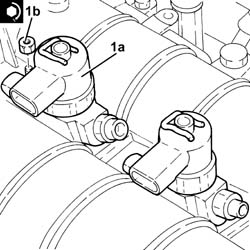
Applies to: engines: 1.9 JTD 16V; all production periods
1. Fit new pipes from the fuel manifold to the injectors and secure with connectors without tightening.
2. Tighten the connectors for the pipes from the fuel manifold to the injector side injectors to the recommended torque using an appropriate commercial wrench.
Fastening | Component | Ø | Value (daNm) | |
|---|---|---|---|---|
2 | Connector | PIPE FUEL MANIFOLD TO INJECTORS | M12 | (Injector side) 2.2 - 2.4 |
3. Tighten the connectors for the pipes from the fuel manifold to the fuel manifold side injectors to the recommended torque using an appropriate commercial wrench.
Fastening | Component | Ø | Value (daNm) | |
|---|---|---|---|---|
3 | Connector | PIPE FUEL MANIFOLD TO INJECTORS | M12 | (Fuel manifold side) 2.2 - 2.4 |
4. Connect the pipe from the injectors to the fuel recovery manifold (4a) to the injectors by pushing home until clips (4b) can be heard to click into place.
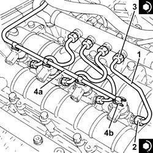
Applies to: engines: 1.9 JTD 16V; all production periods
Place the electrical wiring in position and tighten the bulkhead coupling bolts.
Fasten the electrical wiring using the band on the timing cover.
Connect the electrical connection of the air conditioner compressor.
Connect the electrical connection for the cam angle sensor.
Connect the electrical connections to the injectors.
1. Refit the bracket on the engine for reaction link (1a), then secure by tightening bolts (1b) and (1c) to the specified torque.
Fastening | Component | Ø | Value (daNm) | |
|---|---|---|---|---|
1b | Bolt | REACTION LINK BRACKET ON ENGINE | M10 | (Cylinder head side) 4.5 - 5.5 |
Fastening | Component | Ø | Value (daNm) | |
|---|---|---|---|---|
1c | Bolt | REACTION LINK BRACKET ON ENGINE | M10 | (Power assisted steering pump side) 4.5 - 5.5 |
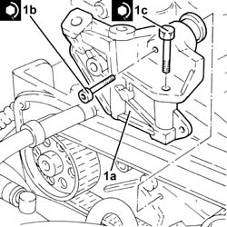
Applies to: engines: 1.9 JTD 16V; all production periods
Proceed with the refitting
Op. 1032D12 TIMING SYSTEM PROTECTIVE COVER(S) - R + R.
Proceed with the refitting
Op. 1092G20 ENGINE COMPONENT SINGLE BELT FIXED TENSIONER - ONE - R + R.
Proceed with the refitting
Op. 1092A10 CRANKSHAFT SERVICES PULLEY - R.R..
Proceed with the refitting
Op. 1092G10 SINGLE ENGINE BELT R R.
Proceed with the refitting
Op. 7055B91 RIGHT FRONT WHEEL ARCH LINER - R.R..
Proceed with the refitting
Op. 7055B54 UNDER-ENGINE GUARD - R R.
Proceed with the refitting
Op. 4450B04 RIGHT FRONT WHEEL R R.
Proceed with the refitting
Op. 1060G80 DS ELECTRIC INJECTION CONTROL UNIT - R R.
Proceed with the refitting
Op. 1008C10 POWER UNIT UPPER REACTION LINK R R.
Connect the negative battery terminal (-).
Remove the vehicle from the lift.
Topics linked from this page (10)
- 1008C10 POWER UNIT UPPER REACTION LINK R R
- 1032D12 TIMING SYSTEM PROTECTIVE COVER(S) - R + R
- 1060G80 DS ELECTRIC INJECTION CONTROL UNIT - R R
- 1092A10 CRANKSHAFT SERVICES PULLEY - R.R.
- 1092G10 SINGLE ENGINE BELT R R
- 1092G20 ENGINE COMPONENT SINGLE BELT FIXED TENSIONER - ONE - R + R
- 4450B04 RIGHT FRONT WHEEL R R
- 5530B10 BATTERY - R+R
- 7055B54 UNDER-ENGINE GUARD - R R
- 7055B91 RIGHT FRONT WHEEL ARCH LINER - R.R.